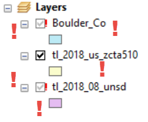
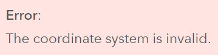

It is important that graduates are prepared to work with industry standard software.
"What happened to my data?"
"My data is in the middle of the ocean!"
"Data Science" is having a moment...
Python as well...
import React, { useState } from 'react';
function Example() {
const [count, setCount] = useState(0);
return (
<div>
<p>You clicked {count} times</p>
<button onClick={() => setCount(count + 1)}>
Click me
</button>
</div>
);
}
well, you know.
Phil White, University of Colorado Boulder
Email: philip.white@colorado.edu
Slides: outpw.github.io/WAMLpres2019
Code examples: github.com/outpw/geodex
Mapbox GL JS examples